Bloemen voorjullie ja-woord.
Bruidsboeket, corsages, bloemen voor de auto, de ceremonie en de tafels. Monique maakt alles zelf in haar atelier aan de Sportlaan, na een rustig gesprek met jullie twee.
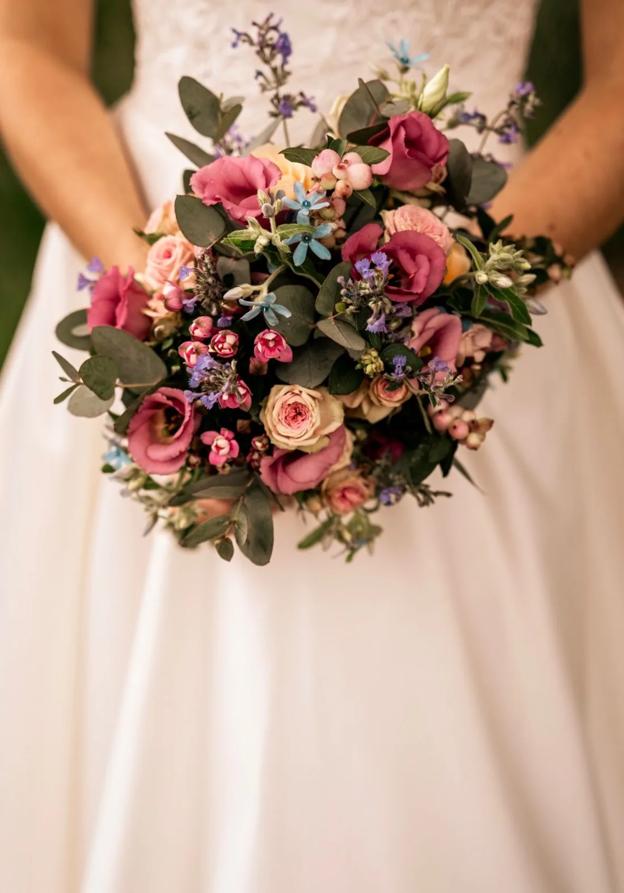
Eerst een bloemendate.
Alles begint met een gesprek in het atelier. Jullie wensen op tafel, en samen zoeken we wat bij jullie past.
- 01
Het gesprek
Jullie komen langs in Balen en vertellen over de locatie, de kleuren en de sfeer. Heb je al een idee, of is kiezen lastig? Allebei goed.
- 02
Moodboard en offerte
Na het gesprek krijgen jullie een moodboard voor jullie dag en een vrijblijvende offerte. Zo zie je meteen of het klopt.
- 03
Op de grote dag
De bloemen ophalen of laten brengen, het kan allebei. Wil je dat Monique de hele styling op de locatie verzorgt, dan rekent ze daar een stylingsuurloon voor.
Van boeket
tot borstzakje.
Een prachtig bruidsboeket, een sierlijke corsage of een kleurrijke bloemenzee. Alles is mogelijk, zolang het bij jullie past.
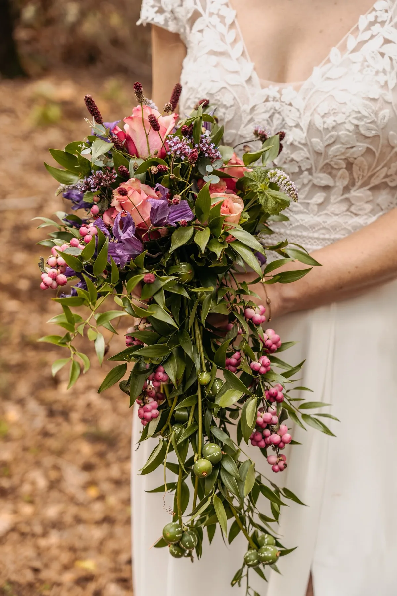
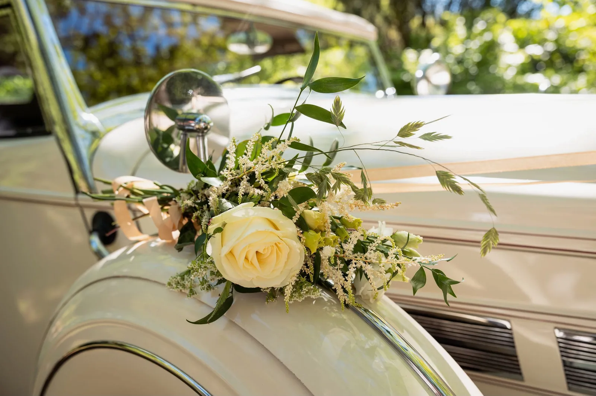
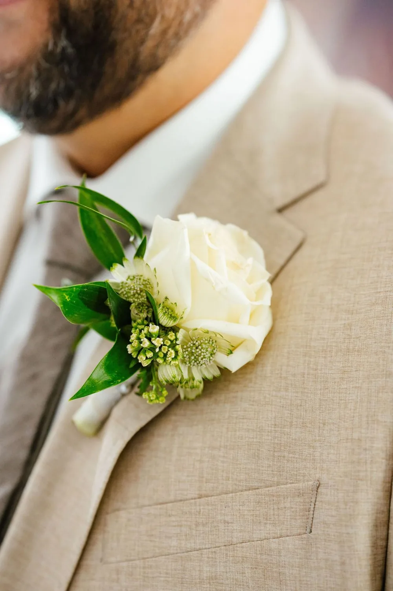
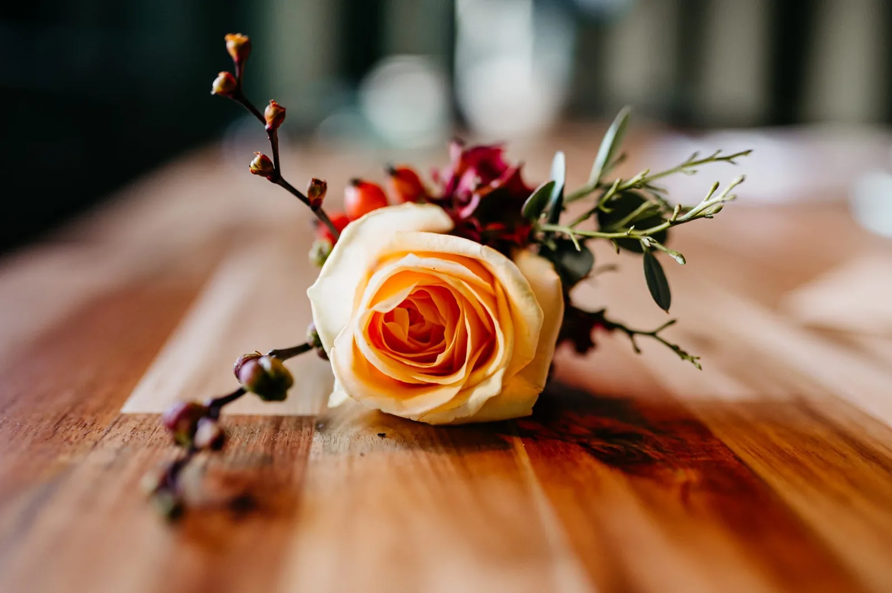
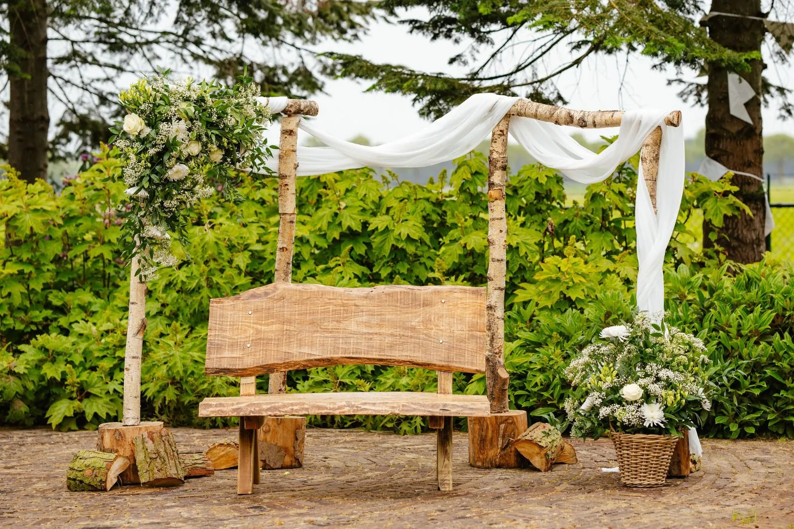
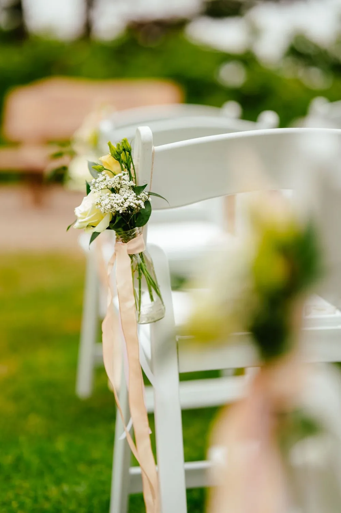
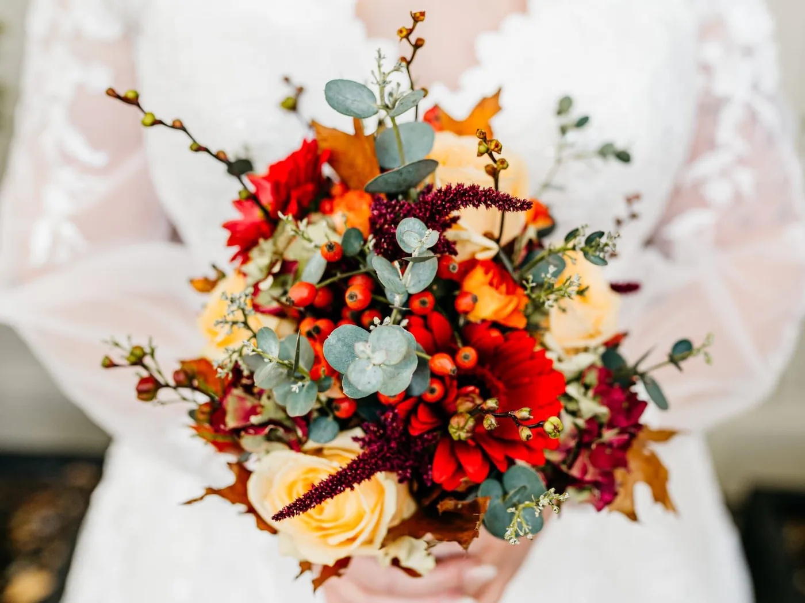
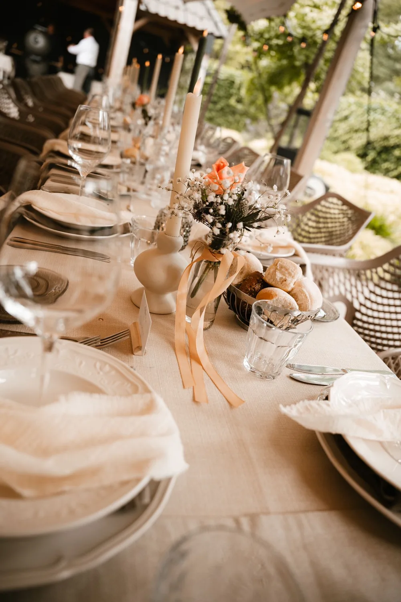
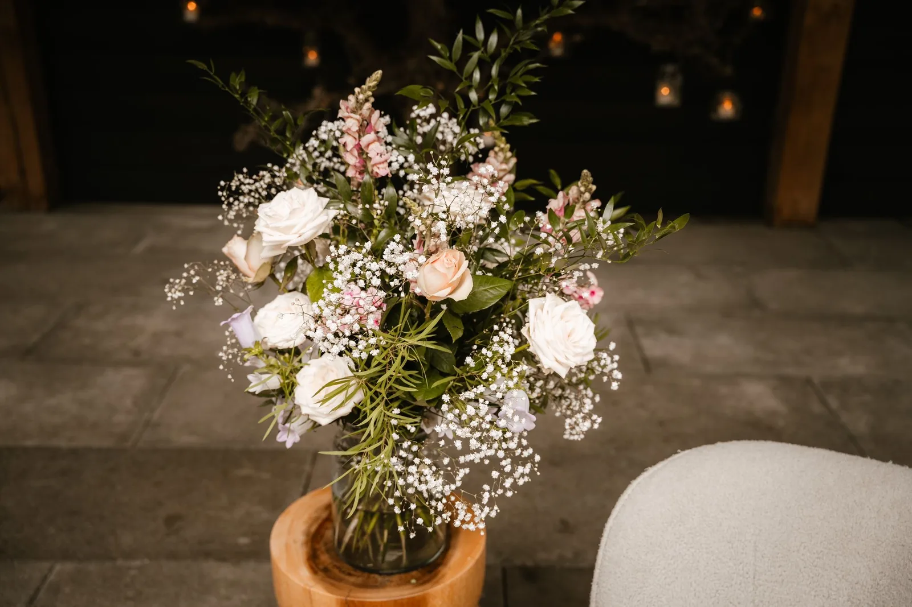
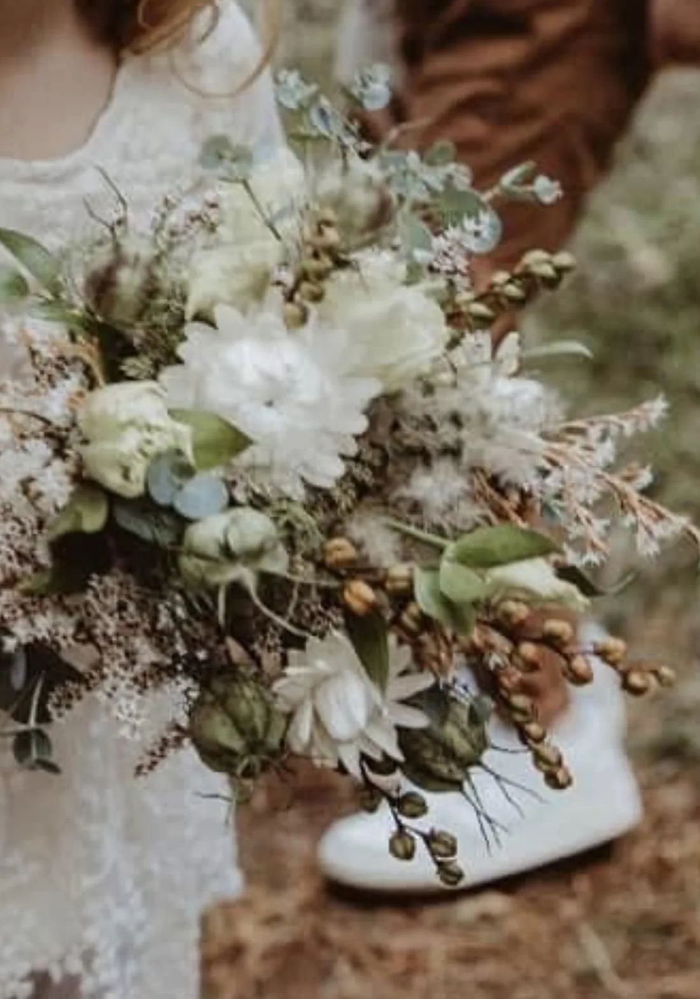
Monique, uit een echte bloemenfamilie.
Op haar vijfde plukte ze al bloemetjes, op haar twaalfde ging ze naar de bloemenschool. Bloemen maken voor een trouwdag vindt ze nog altijd het dankbaarste wat er is.
- NuenenBijna 28 jaar een eigen bloemenwinkel in het centrum
- Son en BreugelAtelier aan huis vanaf juli 2017
- BalenSinds januari 2026 aan de Sportlaan, in het groen van de Kempen
Flesjes, manden en vazen lenen.
Bestellen jullie het volledige bruidswerk bij Monique, dan mogen jullie haar spullen gebruiken zonder dat het iets kost.
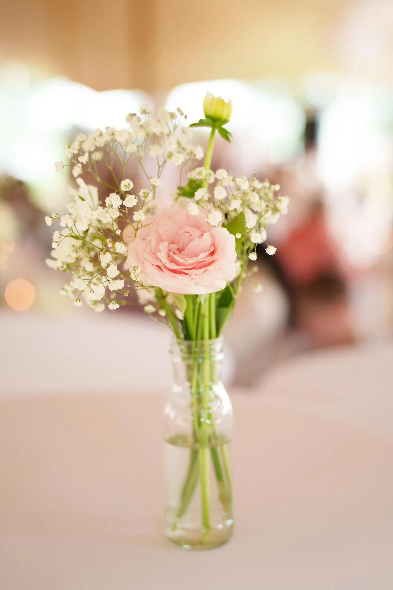
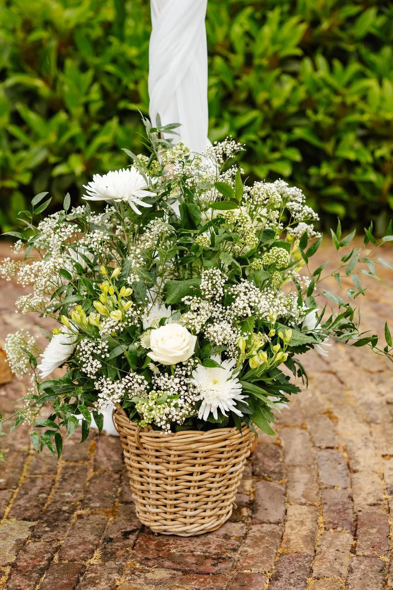
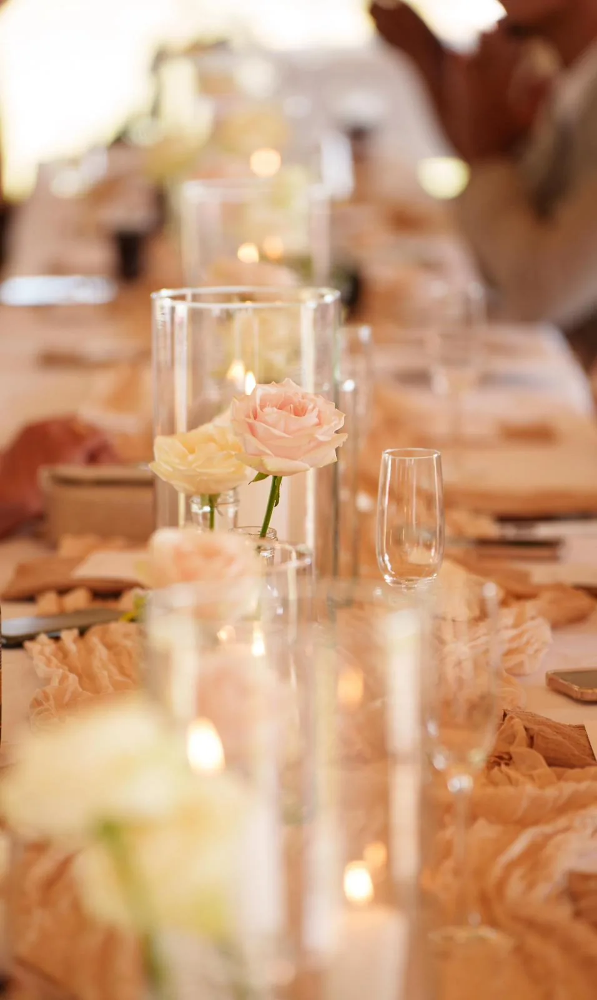
Wat bruidsparen schrijven.
Monique is een topvrouw! Ze luisterde perfect naar onze wensen en heeft hiermee een geweldig boeket gemaakt dat precies bij mij past!
Monique heeft voor onze bruiloft het bruidsboeket, een bruidegomscorsage voor in het borstzakje, twee kinderboeketten én een vaas met bloemen gemaakt. En WAUW, wat was het mooi!
Tijdens de kennismaking hebben we besproken wat we ongeveer wilden en het resultaat was zelfs nog mooier! Kregen ook veel complimenten.
Vertel ons over jullie dag.
Vul in wat je al weet, de rest bespreken we samen. Je bericht staat meteen klaar in WhatsApp of in je mail.